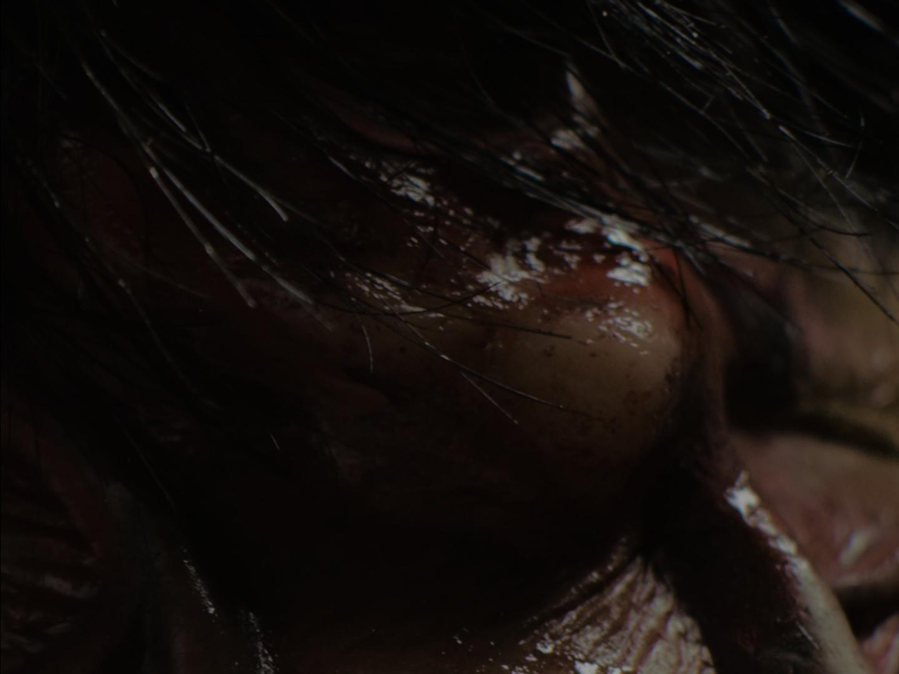
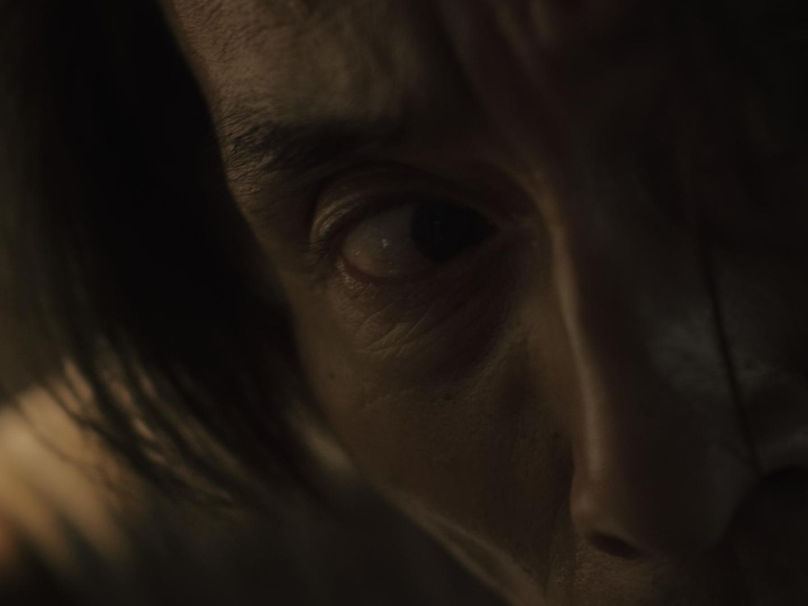
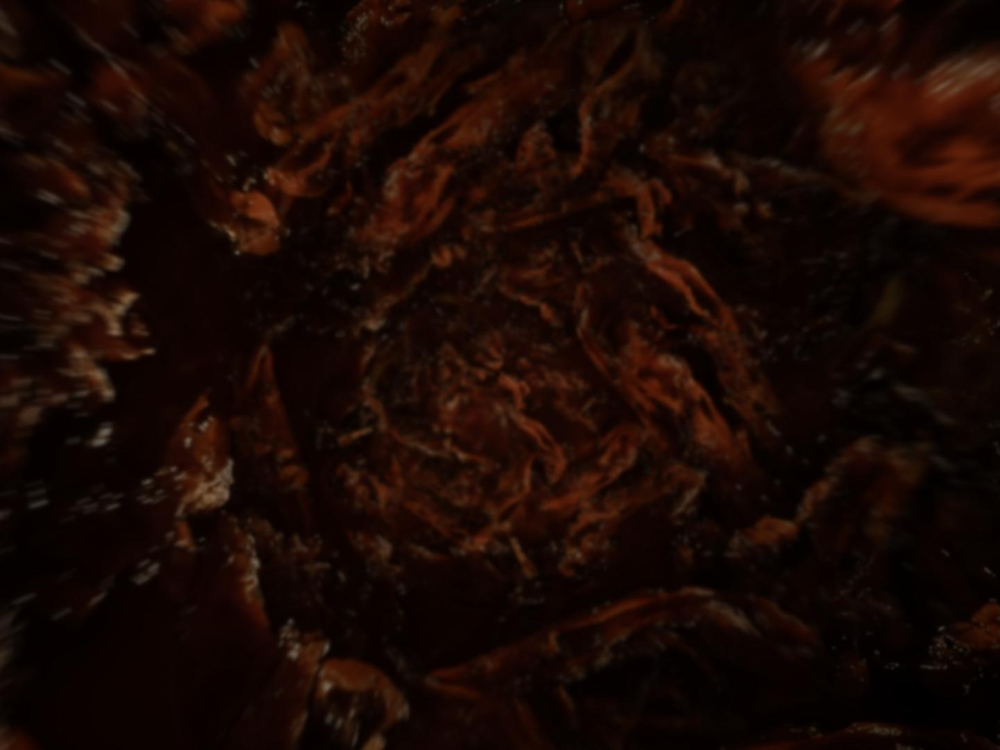
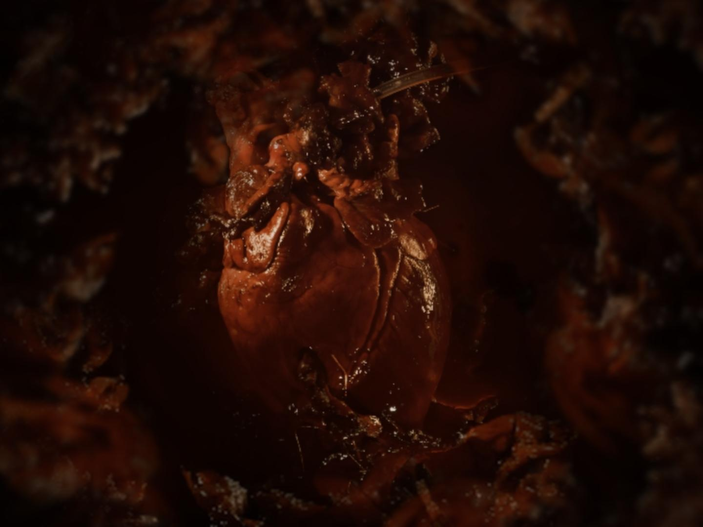
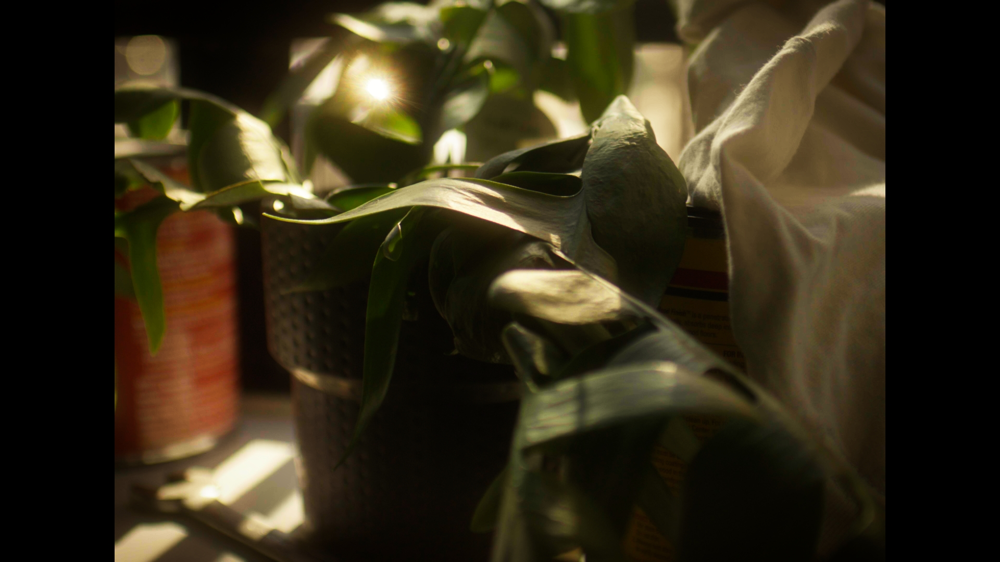
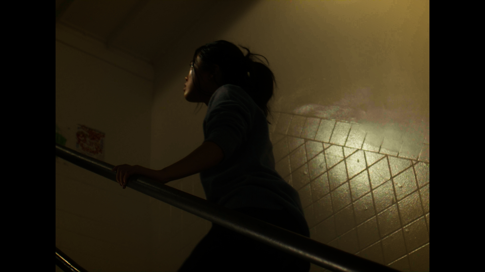
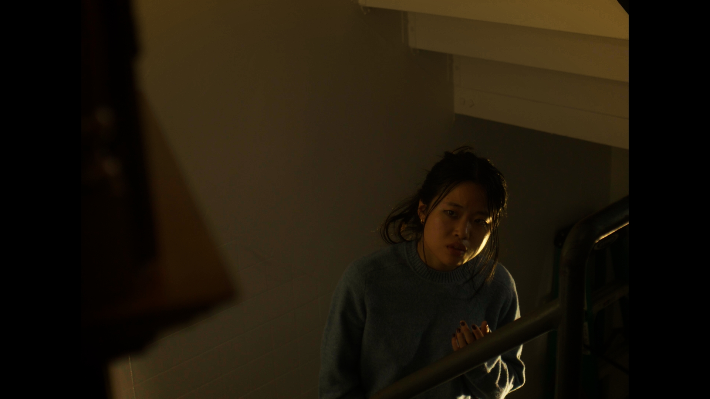
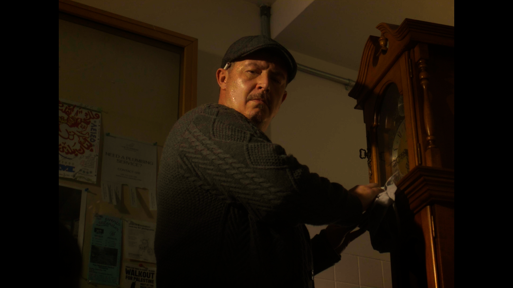

FILMS
Back to TicketNose Narrative
(Tentative)
2026 | In Post | Narrative Short | Korean

Bread and Wine
2026 | In Post | Narrative Short | Korean
The Wedding Ring Thief
(결혼 반지 도둑)
2025 | In Post | Narrative Short | English, Korean

How To Smell Without A Nose
2024 | 00:07:58 | Experimental Short | MOS

Advil Boxer
2024 | 00:01:00 | Commercial Spec | English

The Woman Who Makes Tofu in Prison
2023 | 00:07:00 | Experimental Short | Korean w/ English Sub

Self-Portrait Using Textile Project
2023 | 00:02:09 | Experimental Short | MOS
50 Meters
2023 | 00:02:00 | Experimental Short | MOS

FACETIME
2022 | 00:05:52 | Experimental Documentary | Korean & English
CINEMATOGRAPHY WORKS


This Party Never Happened
2025 | Dir. Hannah Stevens | Arri Alexa Mini LF, Arri Alexa 35






Squelch
2024 | Dir. Vivian Xiao | Red Komodo 6K
2026 NFFTY Official Selection 2026 CineYouth by Chicago International Film Festival Official Selection


Aramsa
2024 | Dir. Imaji Ramadan | Red Komodo 6K




Eeye
2024 | Dir. Vivian Xiao | Sony FX3


Personal Works
2021-Present | Esther Yun Kong | From Lumix s5iix to Arri Alexa 35 :D
Collage of my dp work from my personal projects!